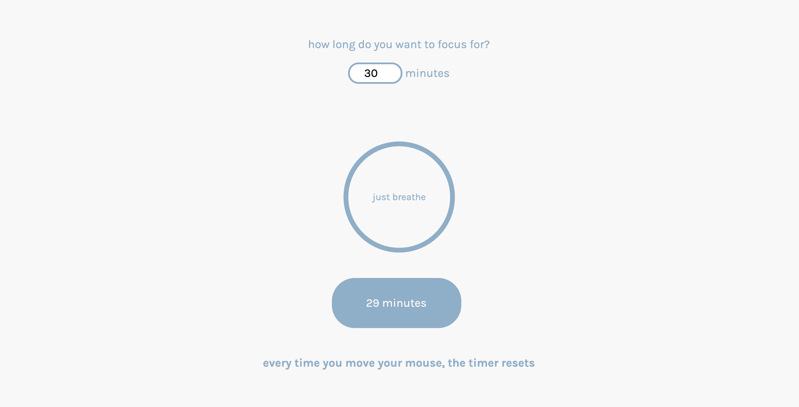

just focus
2020
Like a lot of people, I've found myself spending more and more time on my computer since the pandemic has started. I built this to remind myself to take breaks to focus, not on my work, but on my breath.
A user will enter in the amount of time they wish to focus or meditate for and then the timer begins its countdown. If the user moves the mouse, the timer will reset and then begin the countdown again.
The user inputs their desired time for their focus break, which is displayed at the bottom and changes as the timer counts down
The size of the circle also gets smaller and grows larger, mimicking the flow of the breath

The minutes will count down as the user successfully focuses. However, each time the user moves their mouse, the timer resets back to the original input amount.